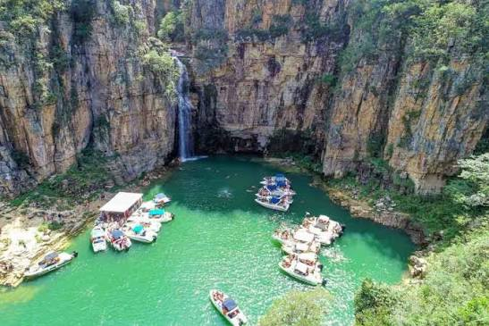

Por volta de 1800: Os exploradores portugueses Machado de Faria e Gonçalves de Morais chegaram à região conhecida como "Mata do Rio Piumhi"
Por volta de 1830: Os fundadores João, Manoel e Antônio Francisco chegaram ao local, dando origem aos primeiros assentamentos chamados de Arraial dos Franciscos ou Arraial dos Cabeças.
1895: Pedro Messias da Cunha construiu a capela de São Sebastião, e a localidade passou a se chamar Arraial de São Sebastião dos Franciscos.
7 de setembro de 1923: O núcleo foi elevado à categoria de distrito com o nome de Capitólio (nome sugerido por Abel de Moraes Bello em referência ao termo em latim Capitolium).
27 de dezembro de 1948: Capitólio conquistou sua emancipação política e municipal, separando-se de Piumhi.
Décadas seguintes: Com a construção daUsina Hidrelétrica de Furnas e a formação do imenso Lago de Furnas Lago de Furnas (conhecido como o "Mar de Minas"), a economia local mudou-se da pecuária tradicional para o turismo de natureza.
Venha conhecer os melhores lugares de capitolio
Águas verdes, cânions gigantescos e cachoeiras

Passeios Náuticos e Vistas Panorâmicas
Lago de Furnas: : Conhecido como o "Mar de Minas", possui 1.440 km² de extensão. Os passeios de lancha, chalana ou catamarã (com duração média de 3 a 7 horas e preços a partir de R$ 45 a R$ 170) levam os visitantes para navegar entre os paredões de pedra.
Pauá Parque - Mirante dos Canyons: Localizado no KM 312 da Rodovia MG-050, é o principal cartão-postal da cidade. Oferece vista panorâmica do alto dos cânions, ponte suspensa, tirolesa e trilhas leves (ingresso em torno de R$ 70 a R$ 80).
Complexos de Cachoeiras e Parques Ecológicos
Cachoeira Lagoa Azul: Famosa pelas águas cristalinas em tons de azul e verde, com piscinas naturais de fácil acesso na região da Rodovia MG-050 (entrada cobrada no local, cerca de R$ 30).
Trilha do Sol: Parque ecológico com trilhas fáceis a moderadas de cerca de 3 km, passando por cachoeiras (como a Cachoeira no Limite e Cachoeira Encantada), poços naturais e mirantes (ingressos entre R$ 35 e R$ 120).
Cachoeira da Capivara Complexo Ecológico: Localizada no KM 314 da MG-050, conta com quedas d'água, dezenas de poços naturais e boa infraestrutura para banho e prática de stand-up paddle.
Paraíso Perdido: Fica na cidade vizinha de São João Batista do Glória, mas é parada obrigatória para quem visita Capitólio. É um grande complexo de piscinas naturais, quedas d'água e cânions de quartzito (ingresso em torno de R$ 40).
Pratos Típicos da Região
Tilápia: Preparada de diversas formas (recheada, na telha, grelhada, em moqueca, à parmegiana, à dorê ou como tira-gosto).
Clássicos Mineiros: Carne de lata, costelinha de porco, couve, linguiça artesanal, feijão tropeiro e galinha caipira.
Queijos e Quitandas: Fortemente influenciada pela proximidade com a Serra da Canastra (como os queijos artesanais), além de doces caseiros, cachaças e pães de queijo.